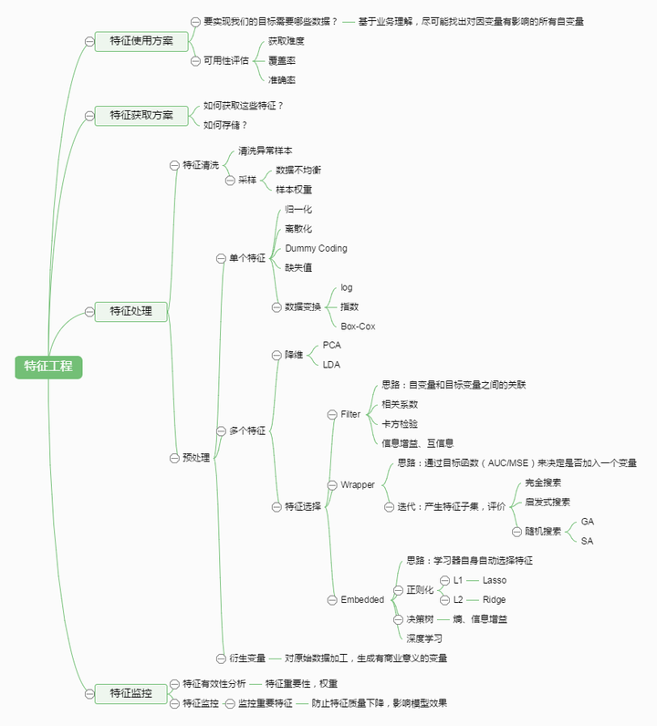
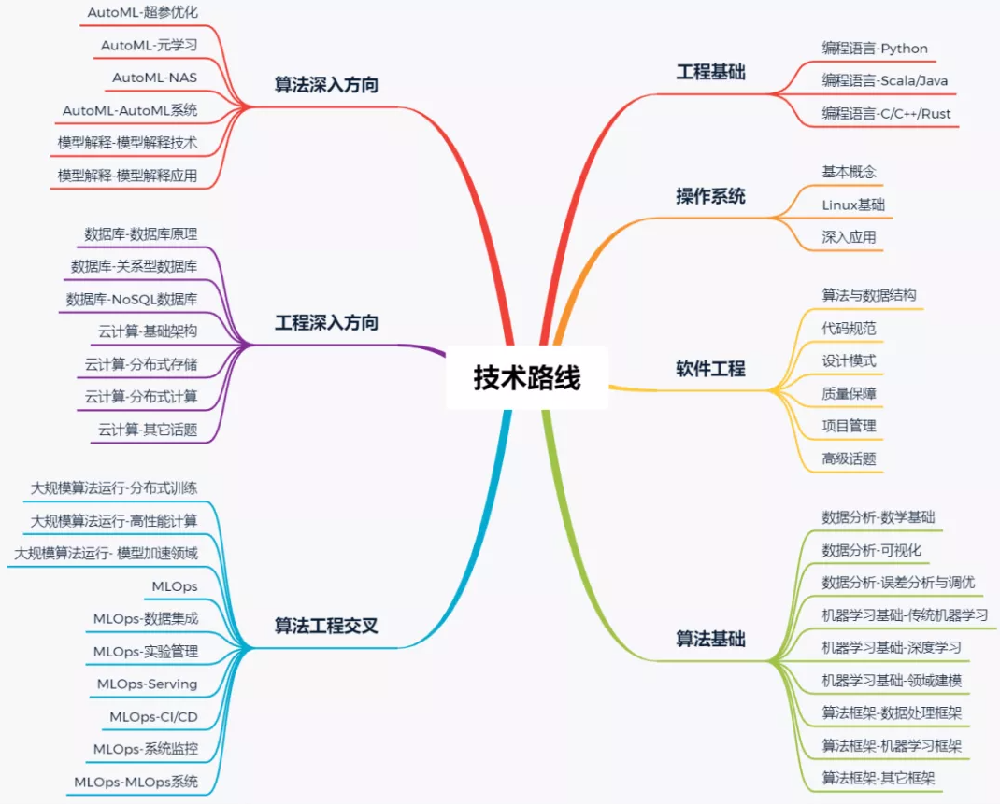

第 4 章 机器学习基础
自学机器学习多半不会一帆风顺，以下十个要点在自学中要高度重视，这样会少会走很多弯路：
- 数学，代码和数据是你最重要的三大项
任何有效的机器学习管道都是数学、代码和数据的交叉。每一项只有和另一项在一起时才会有效果。
如果你的数据质量很差，那么无论你的数学计算多么优雅或代码多么高效都没用。
如果你的数据质量最高，但你的数学计算错误，那么你的结果可能会不是很好，甚至会更糟，造成伤害。
如果你的数据和数学都是世界级的，但是你的代码效率很低，那么你将无法获得扩展带来的好处。
数据为你提供了一个包含自然瑰宝的采矿地点。数学就是你的鹤嘴锄。代码可以让你建立一支挥舞着鹤嘴锄的机器人队伍。
这三大项是你系统的输入(你拥有的)和输出(你想要的)之间的桥梁。
注：三大项中的数学分支也包含统计和概率。
- 三大项之外的唯一例外
除了不能平衡这三大项之外，还有一个更大的罪过：忘记这三大项是为谁服务的。即使是执行得最好、由最优雅的数学驱动的代码，如果不能为客户提供服务，从最丰富的数据中获得洞察也毫无意义。
工程师经常会发现自己迷失在一个过程中，忘记了最初想要的结果。尽管他们怀着良好的意图进行，但他们忘记了，意图并不像行动那么重要。
三大项至少要为客户提供点好处，总比什么都不提供要好。
需要澄清的是，如果你的先进模型需要47倍的时间才能提高1%的准确率，那么它是否提供了最好的体验？
- 不要被三大项给骗了
无论你多么崇拜这三大项，你都不应该被你的爱蒙蔽。自学成才的机器学习工程师是他们自己的最大的怀疑者。
他们知道，数据不能进行证明，只能进行反驳(只要在十亿数据中有一个数据点就能证明之前的概念是错误的)，一点点糟糕的数学运算就会产生极端的后果(自然不是线性的)，代码的效率只有在它最薄弱的地方才有。
无论三大项多么神圣，直觉也不应被忽视。如果一个结果好得令人难以置信，除非你很幸运，否则它很可能就是错的。
- 和你需要提供服务的客户保持好关系
让机器做它们擅长的事情(反复重复过程)。让你去做你擅长的事情时(关心、设身处地、提问、倾听、领导、教学)。
你的客户不像你那样关心三大项。他们关心他们的需求是否得到满足。
- 向那些为你奠定基础的人致敬
当你想到计算机、机器学习、人工智能、数学等领域时，你会想到谁的名字？
Ada Lovelace，Geoffrey Hinton，Yann LeCun，Yoshua Bengio，Alan Turing，Fei Fei Li，Grace Hopper，Andrew Ng，Jon Von Neumann，Alan Kay，Stuart Russel，Peter Norvig？
当然，在你听到或记住的所有名字中，有1000个名字功不可没，但却从历史书中消失了。
后起之秀应该认可前辈们做出的巨大努力，但也应该认可他们中的每一个人都会告诉这位新晋的机器学习工程师同样的事情：这个领域的未来取决于你的工作。
- 不要低估了完全重写的力量
你的目标应该是在第一时间构建可靠的东西。但随着技能的提高，你可能会想重构之前的作品，拆掉它们，用新的视角重新创造它们。
自学成才的机器学习工程师都明白，就像大自然一样，软件和机器学习项目永远不会完成，它们一直在运动。数据变化，代码在新的硬件上执行，一个天才发现了一个计算高效，低内存依赖的优化器适合，并称之为Adam。
你不仅应该对这些变化持开放态度，还应该欢迎它们。一旦它们出现，请使用你最好的判断力来判断它们是否值得实现到你的系统中 —— 仅仅因为有些东西是新的，并不意味着它是必需的。
- 避免在工具上滥情
在编程界，一个常见的轶事是粉刷自行车棚。它说的是一个程序员，或者一组程序员，担心的是车棚应该是什么颜色，而不是问一些重要的问题，比如车棚是否真的可以存放自行车。
当然，这个自行车棚也可以用电脑程序来代替。
在机器学习的世界里，你会听到关于R还是Python、TensorFlow还是PyTorch、书籍还是课程、数学还是code first(两者都有，记得这三位一体吧)、Spark还是Hadoop、Amazon Web Services还是谷歌云平台、VSCode还是Jupyter、Nvidia还是……的无休止的争论。
所有的比较都是有效的，但没有一个值得与对方争论。
你应该回答的真正问题是：用什么可以让我以最快、最可靠的方式建立我的想法？
一旦你问自己这个问题，你会发现其他人都在问自己同样的问题。
工程师的诅咒是从工具开始，然后寻找问题，而不是从问题开始，然后寻找工具，只有到了那个时候，如果没有合适的工具，才应该去构建它。
学习资源也是如此。数学、代码和数据的三大项，在你学习它的时候就是不变的，唯一重要的是你如何使用它。
不要忘记：许多问题可以在没有机器学习的情况下解决。
- 你的想法是商品
不要把一个执行好想法的人与窃取你想法的人混为一谈。你的想法在别人手中比在你的头脑中更有价值。
作为一名工程师，你的角色不仅是建立自己的想法，而且还要与他人沟通，向他们展示如何从这些想法中获益。如果你缺乏这样的沟通能力，你应该与有这种能力的人合作，或者寻求培养这种能力。
在一个没人知道该相信什么的世界里，你可以通过做真实的自己来区分自己。诚实面对你做的东西所能提供的和你所不知道的。能够承认自己的无知是一种优势，而不是弱点。
好的技术总是胜利的，撒谎永远不会胜利。构建技术。不要撒谎。
- 你的邻居、同事、同学和伙伴也在思考这个问题
你看到别人的进步而嫉妒吗？或者你把它看作是你能做到的事情的动力？
你对别人的成功的感觉就是你自己成功时候的感觉。
- 不能贪
你应该寻求建立你运用三大项的技能，回答那些你想要提供服务的人的问题，但你不应该带着欲望这样做。欲望会诅咒你，让你永远过于严肃地看待未来，而不是享受你现在所拥有的。
对提高技能的渴望的治疗方法是培养对学习的热爱。
自学成才的机器学习工程师能够很快地学习利用数学、代码和数据力量所需的概念，但不能匆忙行事。他们明白学习任何有价值的技术都需要时间，如果是这样的话，还不如享受这个过程。
从一开始，你就是对自己的启蒙和教育负责的人。知道了这一点，你就应该选择那些无论你有什么样的运气都能成功的项目。这个项目是否满足了你的好奇心？它是否对你的技能构成挑战？它可以让你遵守这些戒律吗？如果是这样，就足够了。
最后，在沿着自己的道路行进的同时，自学成才的机器学习工程师在他们的脑海中一直保持着这样的印象：
- 没有知识就没有资质
- 没有行动就没有思想
- 没有享受就没有学习
- 没有风格就没有创造
- 没有实践就没有技巧
- 没有工具就没有目的
- 没有展示没有贸易
- 没有怀疑就没有假设
- 没有贡献就没有消费
- 没有对现在的爱，就没有对未来的渴望
- 最重要的是，没有三大项就没有机器学习
4.1 机器学习总览
4.2 机器学习的局限
4.3 数据清理和格式化
4.4 探索性数据分析
4.5 特征工程和特征选择
有句话必须得放在前面：数据和特征决定了机器学习的上限，而模型和算法只是逼近这个上限而已。由此可见，特征工程尤其是特征选择在机器学习中占有相当重要的地位。

4.6 性能指标
4.9 评估最佳模型
4.10 机器学习资源推荐
李沐大神在斯坦福开新课了！面向机器学习实战，课程全部免费！！
斯坦福2021版图机器学习课程完结，视频、PPT全放送，大神主讲
4.11 面试&竞赛经验
知乎看到了一篇很好的算法工程师的学习技术总结，可以很好地，为大家在技术路线的成长方面提供一些方向指引，配套一些自我考核项，可以带着实践进行学习，加深理解和掌握。
技术学习路线脑图一览：

4.12 机器学习的书怎么读？
看书绝对是一种效率最低却必须在学习过程中经历的一个过程，第一次学机器学习的时候还是选定一本书，先精通一本书籍，再泛读其他书籍，其他机器学习书籍作为查缺补漏的教材或者参考资料。
其实入门的话感觉还是要看一些视频，ng大大的最方便，台湾有个机器学习基石，也不错，但是视频永远只能入门，而看书，像prml的作用也只是夯实基础，适当在感兴趣领域追一些paper，也是很有帮助的。
经典书籍的精读注意以下三点：
一、反复重复推导过程；
二、实践代码，将数学推导与数据的特点，如维度等建立联系；
三、看不懂正常，多翻几本书比较着看，然后上网搜推导过程